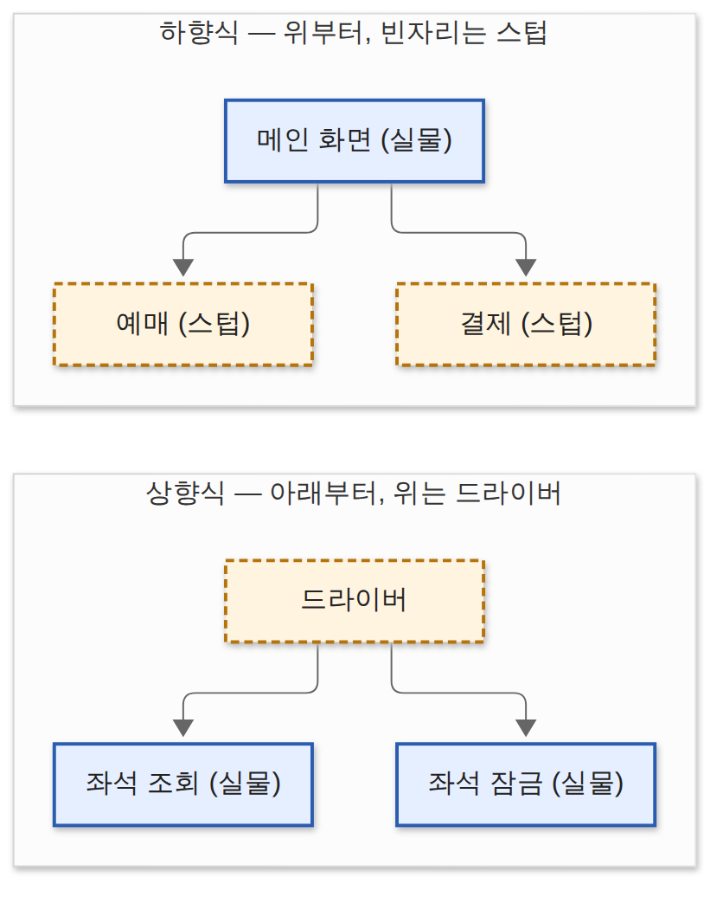
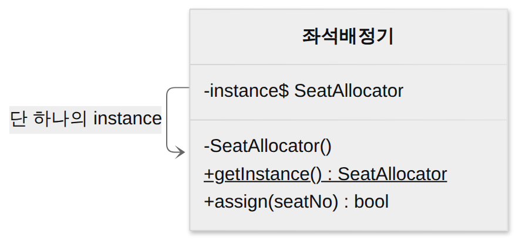

D042 · 견적부터 인수까지 — 공연 티켓팅 앱 ‘무대앞’ 6개월로 꿰는 비용 산정·형상 관리·DRM·통합 테스트·정렬 복잡도
A 토요일(D040)에 1과목 앞쪽 절반을 기출 각도로 다시 훑었고, 오늘은 뒤쪽 절반이에요. 범위는 A5 방법론 활용, A6 통합 구현, A7 패키징, A8 테스트 관리, 그중 최근 20회 시험에서 18회 이상 나온 개념이 중심이에요. 예시는 동네 소극장 연합이 6개월 안에 만들려는 공연 티켓팅 · 다시보기 앱 ‘무대앞’ 하나로 처음부터 끝까지 따라가요. 1월 견적부터 6월 인수까지, 한 장면이 한 달이에요.
- 비용 산정 기법을 하향식 · 상향식 · 수학적 모형으로 나누고, LOC 개월 수를 손으로 계산하며, COCOMO 세 유형 · Putnam · 기능 점수 · 델파이를 구별할 수 있다
- 폭포수 · 나선형 · 애자일과 정보공학 · CBD를 “무엇이 중심인가” 질문으로 구별할 수 있다
- 형상 관리 네 활동을 “반영 전 승인 = 통제, 반영 후 확인 = 감사”로 가를 수 있다
- DRM 구성요소(패키저 · 클리어링 하우스 등)와 ISO 9126 · 25010 품질 특성을 짝지을 수 있다
- 통합 방식과 스텁 · 드라이버를 짝짓고, 알파 · 베타가 속한 테스트 단계와 정렬 알고리즘의 최선 · 최악을 구별할 수 있다
1부 (약 23분)
2부 (약 23분)
0. 기본 전제와 용어 사전
제목 옆 기출 N회는 최근 20회 시험 중 그 개념이 나온 회차 수예요. 비용 산정 · 형상 관리 · 정렬은 20회 모두 나왔으니 사실상 “매번 나오는 문제”예요. 그래서 이 셋은 앞쪽에서 길게, 품질 표준처럼 묶음으로만 나오는 개념은 짧게 다뤄요. D039에서 본 응집도 · McCabe · 커버리지 · REST, D040에서 본 XP · 스크럼은 다시 풀지 않고 이름으로만 연결해요.
아래 용어는 이 페이지 전체에서 같은 뜻으로 써요.
| 용어 | 뜻 | 무대앞 예 |
|---|---|---|
| KLOC | 천(Kilo) 라인 단위의 코드 줄 수. 32 KLOC = 32,000라인 | 앱 전체 예상 규모 |
| M/M(맨먼스) | 사람 × 월. 1명이 1달 일한 양이 1 M/M | 8명 × 24개월 = 192 M/M |
| 베이스라인(기준선) | 공식 검토를 거쳐 합의된 산출물의 기준 버전. 이후 변경은 정해진 절차로만 | v1.3 설계서 |
| CCB | 변경 통제 위원회(Change Control Board). 변경 요청의 승인 · 반려를 결정 | 대표 · PM · 개발 리더 |
| 스텁 / 드라이버 | 통합 시험에서 아직 없는 하위 모듈 대역 / 상위 모듈 대역 | 결제 스텁 · 좌석 드라이버 |
| 인수 테스트 | 사용자가 “받아들일 만한가”를 확인하는 마지막 테스트 단계 | 극단 대표의 최종 확인 |
| O(n) | 자료 n개에 대한 처리 시간의 증가 정도(빅오). n²은 n이 두 배면 네 배 | 좌석 정렬 시간 |
1. 큰 그림 — 6개월에 매단 1과목 후반
소프트웨어를 하나 만드는 동안 개발팀이 실제로 부딪히는 질문 순서대로 1과목 후반 범위를 늘어놓으면 외울 목록이 이야기로 바뀌어요. 얼마나 걸리나(비용 산정), 어떤 순서로 만드나(생명주기 · 방법론), 바뀐 걸 어떻게 추적하나(형상 관리), 만든 걸 어떻게 안전하게 파나(패키징 · DRM), 잘 만들었다는 기준은 뭔가(품질 표준), 조각을 어떻게 합치고 넘기나(통합 · 인수 테스트). 마지막으로 성능 문제 하나(정렬 복잡도)가 번외로 붙어요.
그림 1의 장면 이름 아래 적힌 회차를 보면 오늘 범위가 왜 “총정리”인지 보여요. 여덟 개 개념 묶음 모두 18회 이상이라, 한 번 볼 때 정확히 가르는 질문까지 챙기면 1과목 문제의 상당수가 이 페이지 안에서 풀려요.
| 장면 | 개념 묶음 | 기출 |
|---|---|---|
| 1 | 비용 산정(LOC · COCOMO · Putnam · FP · 델파이) | 20 |
| 2 | 생명주기 · 개발 방법론 | 19 · 18 |
| 3 | 형상 관리 · 버전 관리 | 20 |
| 4 | DRM · 패키징 | 17 |
| 5 | 제품 품질 특성(ISO 9126 · 25010) | 18 |
| 6 | 통합 방식 · 스텁 · 드라이버 / 테스트 레벨 | 18 · 18 |
| 7 | 정렬 · 검색 알고리즘 | 20 |
2. 장면 1 — 1월, 견적: 비용 산정 기출 20회
극단 연합 대표가 묻습니다. “6개월이면 되죠?” 개발 리더가 바로 “네”라고 하면 그날부터 6개월 내내 야근이고, “글쎄요”라고 하면 계약이 날아가요. 그래서 근거 있는 숫자가 필요하고, 그 숫자를 만드는 방법들이 비용 산정 기법이에요. 견적서는 점쟁이가 쓰는 게 아니라 숫자가 쓰는 건데, 숫자가 틀리면 결국 점쟁이가 쓴 것과 같아진다는 게 이 장면의 교훈이에요.
비용 산정 기법의 세 갈래
정의: 소프트웨어 비용 산정은 개발에 들어갈 노력(사람 × 기간)과 비용을 미리 추정하는 일이에요. 추정하는 방식에 따라 크게 셋으로 나눠요. 하향식은 프로젝트 전체를 보고 경험 많은 사람이 판단하는 방식으로 전문가 감정 기법과 델파이 기법이 여기 속해요. 상향식은 일을 작은 단위로 쪼개 각각을 추정한 뒤 더해 올리는 방식으로 LOC 기법과 개발 단계별 인원수(노력) 기법이 있어요. 마지막으로 과거 프로젝트 데이터로 만든 공식에 규모를 넣는 수학적 산정 모형이 있고, COCOMO · Putnam · 기능 점수(FP)가 대표예요.
이 세 갈래를 왜 구별할까요? 하향식은 빠르지만 판단한 사람의 경험과 편견을 그대로 떠안고, 상향식은 꼼꼼하지만 쪼갠 단위를 빠뜨리면 전체가 작게 나와요. 수학적 모형은 객관적으로 보이지만 넣는 숫자(규모 · 계수)가 틀리면 소용없어요. 실무에서는 둘 이상을 섞어 서로 검산하죠.
LOC 기법 — 세 값으로 라인 수를 추정
정의: LOC(Lines Of Code) 기법은 소프트웨어 각 기능의 원시 코드 라인 수를 낙관치 · 기대치(가능치) · 비관치 세 값으로 받아, 기대치에 가중치를 준 평균으로 예측치를 구하는 상향식 기법이에요. 흔히 쓰는 식은 예측치 = (낙관치 + 4 × 기대치 + 비관치) ÷ 6이에요. 예측한 라인 수를 인원과 생산성으로 나누면 개발 기간이 나와요.
왜 세 값일까요? 개발자에게 숫자 하나만 물으면 그날 기분이 견적이 돼요. 잘 풀릴 때와 꼬일 때를 함께 물으면 불확실성의 폭이 드러나고, 가운데 값에 무게를 실어 극단값 하나가 결과를 끌고 가지 못하게 해요. 다만 LOC는 코드를 다 짜기 전에는 정확히 셀 수 없고, 같은 기능도 언어나 개발자 습관에 따라 줄 수가 크게 달라진다는 한계가 있어요.
개발 기간 계산은 공식 하나만 기억하면 돼요. 개발 기간 = 예측 총 라인 수 ÷ (투입 인원 × 1인 월평균 생산 라인 수). 노력(M/M)은 총 라인 ÷ 월 생산성, 곧 “한 사람이 혼자 하면 몇 달”이에요. 아래 애니메이션에서 무대앞 견적을 직접 내 볼게요.
| 기능 | 낙관 O | 기대 M | 비관 P | 추정 (O+4M+P)/6 |
|---|---|---|---|---|
| 좌석 선택 | 6,000 | 9,000 | 18,000 | ? |
| 결제 · 환불 | 9,000 | 15,000 | 27,000 | ? |
| 다시보기 | 6,000 | 12,000 | 30,000 | ? |
기능마다 개발자에게 세 값을 받아요. 모든 게 잘 풀리면(낙관), 보통이면(기대), 다 꼬이면(비관) 몇 라인이 될까. 한 숫자만 받으면 그 사람 기분이 견적이 되니까요.
| 기능 | 낙관 O | 기대 M | 비관 P | 추정 (O+4M+P)/6 |
|---|---|---|---|---|
| 좌석 선택 | 6,000 | 9,000 | 18,000 | 10,000 |
| 결제 · 환불 | 9,000 | 15,000 | 27,000 | ? |
| 다시보기 | 6,000 | 12,000 | 30,000 | ? |
좌석 선택: (6,000 + 4 × 9,000 + 18,000) ÷ 6 = 60,000 ÷ 6 = 10,000라인. 기대치에 가중치 4를 줘서 극단값 하나가 결과를 끌고 가지 못하게 해요.
| 기능 | 낙관 O | 기대 M | 비관 P | 추정 (O+4M+P)/6 |
|---|---|---|---|---|
| 좌석 선택 | 6,000 | 9,000 | 18,000 | 10,000 |
| 결제 · 환불 | 9,000 | 15,000 | 27,000 | 16,000 |
| 다시보기 | 6,000 | 12,000 | 30,000 | 14,000 |
결제 · 환불: (9,000 + 60,000 + 27,000) ÷ 6 = 16,000. 다시보기: (6,000 + 48,000 + 30,000) ÷ 6 = 14,000. 세 기능을 더하면 40,000라인이에요.
| 항목 | 값 |
|---|---|
| 추정 총 라인 | 40,000 + 공통 모듈 8,000 = 48,000 |
| 투입 인원 | 8명 |
| 1인 월 생산성 | 250라인 |
로그인 · 알림 같은 공통 모듈 8,000라인을 더해 총 48,000라인. 개발자 8명이 한 사람당 한 달에 250라인을 짠다고 봐요.
| 계산 | 결과 |
|---|---|
| 48,000 ÷ (8 × 250) | 24개월 |
| 노력 = 24개월 × 8명 | 192 M/M |
개발 기간 = 총 라인 ÷ (인원 × 월 생산성) = 48,000 ÷ 2,000 = 24개월. 대표가 원한 6개월의 네 배예요. 이 장면의 대표 얼굴은 여러분 상상에 맡길게요.
COCOMO — 라인 수를 공식에 넣는 모형
정의: COCOMO(COnstructive COst MOdel)는 보엠(Boehm)이 1981년에 제안한, 예상 코드 규모(KLOC)를 입력으로 노력(M/M)과 기간을 계산하는 수학적 비용 산정 모형이에요. LOC를 입력으로 쓰니 “LOC 기반 모형”이라고도 불러요. 기본형의 노력 식은 a × KLOCb이고, a와 b는 소프트웨어 유형마다 달라요.
유형은 셋이에요. 유기형(Organic)은 기관 내부에서 쓰는 50 KLOC 이하의 업무용 · 과학 기술 계산용 소프트웨어, 반분리형(Semi-detached)은 300 KLOC 이하의 트랜잭션 처리 · 운영체제 · DBMS 같은 중간 성격, 내장형(Embedded)은 300 KLOC를 넘거나 하드웨어 · 실시간 제약이 강한 미사일 유도 · 신호기 제어 같은 시스템이에요. 그리고 계산을 얼마나 세밀하게 하느냐로 기본형(Basic), 중간형(Intermediate, 15개 비용 드라이버로 보정), 발전형(Detailed, 단계별로 드라이버를 따로 적용)으로 나눠요.
세 유형의 지수 b는 1.05 · 1.12 · 1.20으로 모두 1보다 커요. 규모가 두 배가 되면 노력은 두 배보다 더 늘어난다는 뜻이에요. 공연으로 치면 객석이 두 배가 되면 안내원은 두 배 정도 늘지만, 안내원끼리 동선을 맞추는 리허설은 두 배보다 훨씬 늘어나는 것과 같아요. 사람이 늘수록 소통 비용이 커지는 효과가 지수에 들어 있어요.
| 유형 | 규모 · 성격 | 노력(M/M) | 기간(개월) | 평균 인원 |
|---|---|---|---|---|
| 유기형 | 50 KLOC 이하 · 사내 업무용 | ? | ? | ? |
| 반분리형 | 300 KLOC 이하 · 트랜잭션 · DBMS | ? | ? | ? |
| 내장형 | 300 KLOC 초과 · 실시간 · 장비 제약 | ? | ? | ? |
COCOMO는 먼저 “어떤 종류의 소프트웨어냐”를 정해요. 무대앞을 32 KLOC(3만 2천 라인)로 보고 세 유형에 차례로 넣어 볼게요.
| 유형 | 규모 · 성격 | 노력(M/M) | 기간(개월) | 평균 인원 |
|---|---|---|---|---|
| 유기형 | 50 KLOC 이하 · 사내 업무용 | 91.3 | 13.9 | 6.6 |
| 반분리형 | 300 KLOC 이하 · 트랜잭션 · DBMS | ? | ? | ? |
| 내장형 | 300 KLOC 초과 · 실시간 · 장비 제약 | ? | ? | ? |
유기형: 노력 = 2.4 × 32^1.05 ≈ 91.3 M/M, 기간 = 2.5 × 91.3^0.38 ≈ 13.9개월, 평균 인원 = 노력 ÷ 기간 ≈ 6.6명. 작은 팀이 익숙한 업무를 할 때예요.
| 유형 | 규모 · 성격 | 노력(M/M) | 기간(개월) | 평균 인원 |
|---|---|---|---|---|
| 유기형 | 50 KLOC 이하 · 사내 업무용 | 91.3 | 13.9 | 6.6 |
| 반분리형 | 300 KLOC 이하 · 트랜잭션 · DBMS | 145.5 | 14.3 | 10.2 |
| 내장형 | 300 KLOC 초과 · 실시간 · 장비 제약 | 230.4 | 14.3 | 16.2 |
같은 32 KLOC라도 반분리형은 145.5, 내장형은 230.4 M/M. 기간은 거의 그대로인데 사람이 늘어요. 제약이 강할수록 같은 코드에 더 많은 손이 간다는 뜻이에요.
| 구간 | 인력 투입 |
|---|---|
| 초기(요구 · 설계) | 적게 → 빠르게 증가 |
| 중반(구현 · 시험) | 정점 |
| 후반(유지보수 쪽) | 서서히 감소 |
Putnam은 같은 질문을 시간 축으로 봐요. 생명주기 동안 투입 인력은 Rayleigh-Norden 곡선처럼 올라갔다 정점을 찍고 길게 내려와요.
| 요구 | Putnam의 경고 |
|---|---|
| 기간을 조금 줄여라 | 필요 노력은 급격히 증가 |
| 사람을 더 붙이면 된다 | 곡선이 뾰족해질 뿐, 비례로 줄지 않음 |
Putnam 모형에서는 납기를 짧게 당길수록 노력이 기간 단축 비율보다 훨씬 크게 늘어요. “6개월에 맞춰”라는 요구가 왜 위험한지 숫자로 보여 주는 모형이에요.
Putnam 모형 — 시간에 따른 인력 곡선
정의: Putnam 모형은 소프트웨어 생명주기 전 과정에 걸쳐 투입되는 노력의 분포를 Rayleigh-Norden 곡선으로 가정해 비용을 추정하는 수학적 모형이에요. 투입 인력은 초반에 빠르게 늘어 정점을 찍고 길게 줄어들어요. 시간에 따라 변하는 인력을 다뤄서 동적 모형이라고도 하고, 대형 프로젝트 추정에 주로 써요. 이 모형을 자동화한 도구가 SLIM이에요.
COCOMO가 “얼마나 큰가”에서 시작한다면 Putnam은 “언제 몇 명이 필요한가”를 그려요. 특히 납기를 조금만 당겨도 필요 노력이 급격히 늘어난다는 점을 보여 줘서, “6개월에 맞춰”라는 요구를 숫자로 되묻는 근거가 돼요.
기능 점수(FP) — 라인이 아니라 기능을 센다
정의: 기능 점수(Function Point) 기법은 알브레히트(Albrecht)가 제안한 방법으로, 코드 줄 수 대신 소프트웨어가 제공하는 기능의 양을 세어 규모를 재요. 기능 유형은 다섯 가지 — 외부 입력, 외부 출력, 외부 조회, 내부 논리 파일, 외부 인터페이스 파일 — 이고 각각 복잡도에 따라 가중치를 곱해 더한 뒤, 처리 복잡도 같은 보정 요소로 조정해요. 자동화 도구로는 ESTIMACS가 짝이에요.
FP가 나온 이유는 LOC의 약점 때문이에요. 언어가 달라지면 같은 기능도 줄 수가 달라지지만, “예매 화면에서 입력 하나 · 영수증 출력 하나”라는 기능의 개수는 언어와 상관없어요. 그래서 요구사항 단계에서 일찍 추정할 수 있어요. 무대앞이라면 좌석 선택 입력, 예매 확인 출력, 공연 일정 조회, 예매 내역 파일, 결제사 인터페이스가 각각 다섯 유형에 하나씩 들어가요.
델파이 기법 — 익명으로 돌리는 전문가 의견
정의: 델파이 기법은 여러 전문가가 서로 모르게 각자 추정치를 내고, 조정자(진행자)가 결과를 모아 요약해 돌려주면 그것을 보고 다시 추정하는 과정을 의견이 모일 때까지 반복하는 하향식 기법이에요. 한 사람의 편견이나 목소리 큰 사람의 영향을 익명과 반복으로 줄이려고 만들었어요.
짝이 되는 전문가 감정 기법은 경험 많은 전문가 두세 명이 과거 비슷한 프로젝트를 떠올려 빠르게 판단하는 방법이에요. 빠르고 싸지만 그 사람의 기억과 편견이 그대로 들어가요. 회의실 토론은 목소리 큰 사람이 이기고, 델파이는 익명 쪽지를 몇 번 돌려 보는 오디션 심사위원단에 가까워요. 가르는 단어는 익명 · 조정자 · 반복이에요.
| 기법 | 분류 | 입력 | 키워드 |
|---|---|---|---|
| 전문가 감정 | 하향식 | 전문가 경험 | 빠름 · 편견 위험 |
| 델파이 | 하향식 | 전문가 여러 명 | 익명 · 조정자 · 반복 |
| LOC | 상향식 | 낙관 · 기대 · 비관 라인 | (O+4M+P)/6 |
| COCOMO | 수학적 | KLOC | 유기 · 반분리 · 내장 |
| Putnam | 수학적 | 생명주기 인력 분포 | Rayleigh-Norden · SLIM |
| FP | 수학적 | 기능 개수 · 가중치 | 입력 · 출력 · 조회 · 파일 · 인터페이스 · ESTIMACS |
→ 이 장면의 결과물: 192 M/M · 24개월이라는 근거 있는 견적. 6개월은 무리라는 걸 숫자로 확인했으니, 다음 장면에서는 “그럼 어떤 순서로 나눠 만들까”를 정해요.
3. 장면 2 — 2월, 방법 고르기: 생명주기 · 방법론 기출 19회
견적이 길게 나오자 대표가 “그럼 먼저 쓸 수 있는 것부터 보여 달라”고 해요. 이 말 한마디가 어떤 생명주기 모델을 고를지 정해요. 생명주기 모델은 소프트웨어를 만들고 쓰고 고치는 과정을 어떤 단계와 순서로 나눌지 정한 틀이고, 개발 방법론은 그 틀 안에서 무엇을 중심에 두고 분석 · 설계하는지 정한 방식이에요.
폭포수 모형
정의: 폭포수 모형은 요구 분석 → 설계 → 구현 → 시험 → 유지보수를 순서대로 한 번씩 거치는 고전적 생명주기 모형이에요. 앞 단계가 끝나고 산출물을 검토 · 승인해야 다음 단계로 넘어가서 선형 순차 모형이라고도 해요. 단계마다 문서가 확실히 남고 관리가 쉬워서, 요구사항이 처음부터 명확하고 잘 바뀌지 않는 프로젝트에 맞아요.
대신 물이 위로 거슬러 오르지 않듯 앞 단계로 되돌아가기 어렵고, 동작하는 결과물은 마지막에야 나와요. 무대앞처럼 대표가 “써 보면서 고치자”는 프로젝트에 폭포수를 쓰면, 6월에 처음 본 앱을 보고 “이게 아닌데”를 듣게 돼요.
나선형 모형
정의: 나선형 모형은 보엠이 제안한 위험 중심 생명주기 모형으로, 계획 수립 → 위험 분석 → 개발 · 검증 → 고객 평가의 네 활동을 한 바퀴씩 반복하며 점점 완성도를 높여요. 바퀴마다 위험을 찾아 줄이는 활동이 들어 있어서 규모가 크고 위험이 높은 프로젝트에 맞고, 반복할수록 시스템이 나선처럼 바깥으로 커져요.
장점은 위험을 일찍 발견해 큰 실패를 막는다는 것이고, 단점은 위험 분석 역량에 크게 기대고 관리가 복잡하다는 것이에요. 나선형은 “폭포수를 여러 번 반복하는 것”이 아니에요. 바퀴마다 그 위험에 맞는 방식(시제품, 순차 개발 등)을 골라 쓰는 틀이라, 위험이 무엇이냐에 따라 매 바퀴의 모습이 달라져요. 리허설을 계속 돌리며 매번 다른 장면을 다듬는 연출가 같다고 보면 돼요.
| 순서 | 나선형 활동 | 무대앞 1바퀴: 좌석 선택 화면 |
|---|---|---|
| 1 | 계획 수립 | 이번 바퀴 목표 · 대안 · 제약 정하기 |
| 2 | 위험 분석 | 동시 예매 충돌 위험 찾고 줄이기 |
| 3 | 개발 · 검증 | 시제품 만들고 시험 |
| 4 | 고객 평가 | 극단 대표가 써 보고 의견 |
나선형 모형은 같은 네 활동을 한 바퀴씩 돌며 점점 큰 시스템을 만들어요. 이번 바퀴의 대상은 좌석 선택 화면이에요.
| 순서 | 나선형 활동 | 무대앞 1바퀴: 좌석 선택 화면 |
|---|---|---|
| 1 | 계획 수립 | 이번 바퀴 목표 · 대안 · 제약 정하기 |
| 2 | 위험 분석 | 동시 예매 충돌 위험 찾고 줄이기 |
| 3 | 개발 · 검증 | 시제품 만들고 시험 |
| 4 | 고객 평가 | 극단 대표가 써 보고 의견 |
계획 수립: 이번 바퀴에서 무엇을 이룰지, 어떤 대안이 있고 무엇이 제약인지 정해요. “인기 공연 오픈 1분에 3천 명”이 제약으로 적혀요.
| 순서 | 나선형 활동 | 무대앞 1바퀴: 좌석 선택 화면 |
|---|---|---|
| 1 | 계획 수립 | 이번 바퀴 목표 · 대안 · 제약 정하기 |
| 2 | 위험 분석 | 동시 예매 충돌 위험 찾고 줄이기 |
| 3 | 개발 · 검증 | 시제품 만들고 시험 |
| 4 | 고객 평가 | 극단 대표가 써 보고 의견 |
위험 분석: 나선형의 심장이에요. 두 사람이 같은 좌석을 동시에 누르면? 위험을 찾아내고, 줄이는 방법(좌석 잠금 시제품)을 정해요. 다른 모형과 가르는 단어가 바로 여기 있어요.
| 순서 | 나선형 활동 | 무대앞 1바퀴: 좌석 선택 화면 |
|---|---|---|
| 1 | 계획 수립 | 이번 바퀴 목표 · 대안 · 제약 정하기 |
| 2 | 위험 분석 | 동시 예매 충돌 위험 찾고 줄이기 |
| 3 | 개발 · 검증 | 시제품 만들고 시험 |
| 4 | 고객 평가 | 극단 대표가 써 보고 의견 |
개발 · 검증: 정한 방식으로 실제로 만들고 시험해요. 이 바퀴에서는 폭포수처럼 순서대로 만들어도 되고, 시제품을 빠르게 돌려도 돼요.
| 순서 | 나선형 활동 | 무대앞 1바퀴: 좌석 선택 화면 |
|---|---|---|
| 1 | 계획 수립 | 이번 바퀴 목표 · 대안 · 제약 정하기 |
| 2 | 위험 분석 | 동시 예매 충돌 위험 찾고 줄이기 |
| 3 | 개발 · 검증 | 시제품 만들고 시험 |
| 4 | 고객 평가 | 극단 대표가 써 보고 의견 |
고객 평가: 극단 대표가 직접 써 보고 의견을 줘요. 그 의견이 다음 바퀴의 계획 수립 입력이 되고, 나선은 한 칸 더 바깥으로 넓어져요.
애자일과 세 모형의 비교
정의: 애자일은 짧은 주기로 동작하는 소프트웨어를 내놓고 고객 피드백에 맞춰 계속 고쳐 가는 개발 방식들의 묶음이에요. XP · 스크럼 · 칸반의 구체적인 가치와 이벤트는 D040에서 봤으니, 여기서는 세 모형이 무엇을 중심에 두는지만 나란히 놓아요. 프로토타입 모형은 사용자 요구를 확인하려고 시제품을 먼저 만들어 보여 주는 방식으로, 나선형의 바퀴 안에서도 자주 쓰여요. 장점은 개발 도중 사용자의 요구를 충분히 반영하고, 의뢰자가 완성 전에 결과물의 일부나 모형을 볼 수 있다는 점이에요. 반대로 단기간에 만들어 보이는 게 목적이라 비효율적인 언어나 알고리즘을 쓸 수 있다는 점은 장점이 아니라 약점이라, “프로토타입의 장점이 아닌 것”에 이 문장이 장점처럼 끼어 나와요. V 모델은 폭포수 모델의 변형으로, 개발 단계 하나하나에 그와 짝이 되는 검증(테스트) 단계를 대응시켜 개발 작업과 검증 작업의 관계를 분명히 한 모형이에요. 요구 분석과 설계 단계를 생략하는 게 아니라 거기서 출발해 테스트 중심으로 V자를 그리고, 산출물 중심인 폭포수와 달리 작업과 그 결과의 검증에 초점을 둬요. 장면 6의 테스트 레벨 표가 바로 이 V의 오른쪽 날개예요.
| 모형 | 중심 | 잘 맞는 상황 | 약점 |
|---|---|---|---|
| 폭포수 | 단계 순서 · 문서 | 요구가 명확 · 안정 | 되돌림 어려움, 결과물이 늦음 |
| 프로토타입 | 시제품으로 요구 확인 | 요구가 모호 | 시제품을 완성품으로 착각 |
| 나선형 | 위험 분석 · 반복 | 대규모 · 고위험 | 위험 분석 역량 의존, 관리 복잡 |
| 애자일 | 변화 수용 · 짧은 반복 | 요구가 자주 바뀜 | 문서 · 장기 계획이 약해지기 쉬움 |
정보공학 방법론과 CBD
정의: 정보공학 방법론은 기업의 데이터(정보)를 중심에 두고 정보 시스템을 계획 · 분석 · 설계 · 구축하는 방법론이에요. 절차는 정보 전략 계획 → 업무 영역 분석 → 업무 시스템 설계 → 업무 시스템 구축 순서이고, 데이터 모델링에 ERD(개체 관계도)를 써요. 대규모 정보 시스템 구축에 맞아요. 같은 계열의 구조적 방법론은 데이터보다 처리(기능)를 중심으로 DFD · 자료 사전 · 소단위 명세서로 분석해요. 큰 문제를 작은 처리로 나눠 내려가는 분할과 정복(하향식) 원리를 쓰고, 객체 · 클래스 · 메시지 같은 구성요소는 구조적이 아니라 객체지향 쪽 용어예요. 그래서 “자료 중심”이나 “객체 · 클래스가 구성요소”라고 쓴 선지는 구조적 방법론 설명으로 틀려요.
정의: CBD(Component Based Development, 컴포넌트 기반 방법론)는 미리 만들어 검증된 컴포넌트를 조립해 소프트웨어를 만드는 방법론이에요. 재사용으로 개발 기간과 비용을 줄이고 유지보수가 쉬워져요. 절차는 개발 준비 → 분석 → 설계 → 구현 → 시험 → 전개 → 인도이고, 분석 단계의 산출물에는 사용자 요구사항 정의서 · 유스케이스 명세서 · 요구사항 추적표가 있어요. 무대앞이라면 결제 컴포넌트는 결제사 SDK를, 좌석 지도는 기존 공연장 앱의 컴포넌트를 가져와 조립하는 식이에요. 비슷해 보이는 제품 계열 방법론은 특정 제품군(예: 공연장 앱 시리즈)에 공통으로 쓸 기능을 정의하고 개발하는 방식이라, “하나의 제품군을 위한 공통 부품 설계”라는 점에서 CBD와 갈려요.
| 방법론 | 중심 | 대표 도구 · 산출물 |
|---|---|---|
| 구조적 | 처리(기능) 흐름 | DFD · 자료 사전 · 소단위 명세서 |
| 정보공학 | 데이터 | ERD, 정보 전략 계획 |
| 객체지향 | 객체(데이터 + 행위) | UML |
| CBD | 컴포넌트 조립 · 재사용 | 분석: 사용자 요구사항 정의서 |
| 제품 계열 | 제품군 공통 기능 | 영역 공학 · 응용 공학 |
→ 이 장면의 결과물: 무대앞은 결제 · 동시 예매처럼 위험한 부분은 나선형처럼 위험부터 시제품으로 확인하고, 화면은 짧은 반복으로 보여 주기로 해요. 이제 코드와 문서가 매주 바뀌기 시작하니, 다음 장면은 “바뀐 것을 어떻게 추적하나”예요.
4. 장면 3 — 3월, 형상 관리 기출 20회
3월 어느 날, 공연 포스터 크기 제한이 누구도 모르게 바뀌어 있고, 설계서와 코드의 좌석 등급 이름이 서로 달라요. 누가 언제 왜 바꿨는지 아무도 모르면 고치는 것보다 범인을 찾는 데 시간이 더 들어요. 이걸 막는 활동이 형상 관리예요.
형상 관리와 베이스라인
정의: 형상 관리(SCM, Software Configuration Management)는 소프트웨어 개발 과정에서 만들어지는 산출물(소스 코드 · 설계서 · 요구 명세 · 시험 계획 등)의 변경 사항을 식별하고 통제하고 추적하는 활동이에요. 목적은 변경이 무질서하게 퍼지지 않게 하고, 언제든 특정 시점의 상태로 되돌아가거나 그 상태를 재현할 수 있게 하는 거예요. 관리 대상(형상 항목)은 개발 산출물이고, 프로젝트 개발 비용 같은 관리 정보는 형상 항목이 아니에요.
형상 관리의 기준점이 베이스라인(기준선)이에요. 공식 검토를 거쳐 합의된 산출물 묶음이 베이스라인이 되면, 그 뒤의 변경은 반드시 정해진 절차를 거쳐야 해요. 무대앞에서는 2월 말 승인된 설계서 v1.0이 첫 베이스라인이에요.
네 활동 — 식별 · 통제 · 감사 · 기록
형상 식별은 관리할 대상을 정하고 이름과 관리 번호(버전)를 붙이는 활동이에요. 무엇이 관리 대상인지 모르면 나머지 활동이 시작될 수 없어요. 형상 통제는 변경 요청을 검토해 승인하거나 반려하고, 승인된 변경을 베이스라인에 반영하도록 조정하는 활동이에요. 결정 주체가 변경 통제 위원회(CCB)예요. 극장으로 치면 “큐 시트를 바꾸려면 무대감독인 내 승인을 받아라”예요.
형상 감사는 변경이 반영된 뒤, 승인된 내용대로 빠짐없이 들어갔는지, 베이스라인이 요구사항과 일치하는지 공식적으로 검증하는 활동이에요. 공연이 끝난 뒤 “큐 시트대로 진행됐나” 확인하는 스태프 같아요. 형상 기록(상태 보고)은 변경 내용과 처리 결과, 현재 상태를 기록하고 관련자에게 보고하는 활동이에요. 네 활동 중 통제와 감사가 가장 자주 바뀌어 나오는데, 변경이 반영되기 전이면 통제, 반영된 뒤면 감사예요.
| 단계 | 누가 | 무엇을 | 활동 |
|---|---|---|---|
| 1 | 개발자 | “포스터 업로드 크기 10MB로” 변경 요청 | — |
| 2 | CCB | 영향 검토 후 승인 | 통제 |
| 3 | 형상 담당자 | 반영하고 v1.3 베이스라인 갱신 | 식별 |
| 4 | 품질 담당 | 승인 내용대로 들어갔나 검증 | 감사 |
| 5 | 형상 담당자 | 변경 이력 · 현재 상태 보고 | 기록 |
3월, 개발자가 공연 포스터 업로드 한도를 늘리자고 요청서를 올려요. 아직 아무것도 바뀌지 않았어요.
| 단계 | 누가 | 무엇을 | 활동 |
|---|---|---|---|
| 1 | 개발자 | “포스터 업로드 크기 10MB로” 변경 요청 | — |
| 2 | CCB | 영향 검토 후 승인 | 통제 |
| 3 | 형상 담당자 | 반영하고 v1.3 베이스라인 갱신 | 식별 |
| 4 | 품질 담당 | 승인 내용대로 들어갔나 검증 | 감사 |
| 5 | 형상 담당자 | 변경 이력 · 현재 상태 보고 | 기록 |
형상 통제: 변경 통제 위원회(CCB)가 “서버 저장 공간 · 앱 화면에 영향은?”을 따져 승인해요. 반영 전 결정이에요.
| 단계 | 누가 | 무엇을 | 활동 |
|---|---|---|---|
| 1 | 개발자 | “포스터 업로드 크기 10MB로” 변경 요청 | — |
| 2 | CCB | 영향 검토 후 승인 | 통제 |
| 3 | 형상 담당자 | 반영하고 v1.3 베이스라인 갱신 | 식별 |
| 4 | 품질 담당 | 승인 내용대로 들어갔나 검증 | 감사 |
| 5 | 형상 담당자 | 변경 이력 · 현재 상태 보고 | 기록 |
반영 후 새 베이스라인(v1.3)이 생겨요. 바뀐 항목에 새 버전 번호가 붙는 일은 형상 식별 쪽 일이에요.
| 단계 | 누가 | 무엇을 | 활동 |
|---|---|---|---|
| 1 | 개발자 | “포스터 업로드 크기 10MB로” 변경 요청 | — |
| 2 | CCB | 영향 검토 후 승인 | 통제 |
| 3 | 형상 담당자 | 반영하고 v1.3 베이스라인 갱신 | 식별 |
| 4 | 품질 담당 | 승인 내용대로 들어갔나 검증 | 감사 |
| 5 | 형상 담당자 | 변경 이력 · 현재 상태 보고 | 기록 |
형상 감사: 승인된 내용 그대로 반영됐는지, 승인 안 된 변경이 몰래 끼지 않았는지 공식적으로 검증해요. 반영 후 확인이에요.
| 단계 | 누가 | 무엇을 | 활동 |
|---|---|---|---|
| 1 | 개발자 | “포스터 업로드 크기 10MB로” 변경 요청 | — |
| 2 | CCB | 영향 검토 후 승인 | 통제 |
| 3 | 형상 담당자 | 반영하고 v1.3 베이스라인 갱신 | 식별 |
| 4 | 품질 담당 | 승인 내용대로 들어갔나 검증 | 감사 |
| 5 | 형상 담당자 | 변경 이력 · 현재 상태 보고 | 기록 |
형상 기록(상태 보고): 누가 · 언제 · 왜 바꿨는지와 현재 상태를 정리해 관계자에게 알려요.
| 가르는 질문 | 활동 |
|---|---|
| 관리 대상에 이름 · 번호를 붙이나? | 식별 |
| 반영해도 되는지 결정하나? | 통제 |
| 반영된 결과를 검증하나? | 감사 |
| 이력을 남기고 알리나? | 기록 |
한 건을 따라가 보면 순서가 자연스럽게 외워져요. 시험은 이 네 질문 중 하나를 설명문으로 주고 이름을 고르게 해요.
버전 관리 도구와의 관계
형상 관리가 “무엇을 어떤 절차로 바꾸나”라는 관리 활동이라면, 버전 관리 도구는 그 활동 중 소스 · 문서의 버전 이력을 실제로 저장하고 되돌리는 도구예요. 공유 저장소 하나에 모두 접속하는 방식이 CVS · SVN, 각자 로컬 저장소에 전체 이력을 복제하고 원격 저장소와 주고받는 분산 방식이 Git이에요. 기능은 체크아웃(가져오기) · 체크인(올리기) · 커밋(확정) · 비교 · 병합 같은 것들이에요. 형상 관리 도구의 대표는 CVS · SVN · Git이고, Ant · Maven · Gradle은 소스를 빌드하는 자동화 도구라 형상 관리 도구로 적으면 틀린 선지예요. 형상 관리를 위해 꾸린 팀을 “chief programmer team”이라 부른다는 선지도 가짜예요(그건 소수 정예로 프로그램을 책임지는 팀 구성 방식이고, 형상 관리는 팀 이름이 아니라 활동이에요). D039에서 본 패키징 도구와 함께 쓰여요.
| 활동 | 가르는 질문 | 시점 | 예 |
|---|---|---|---|
| 식별 | 무엇을 관리하나? | 시작 | 설계서 v1.0, 소스 v0.3 |
| 통제 | 바꿔도 되나? | 반영 전 | CCB 승인 · 반려 |
| 감사 | 승인대로 바뀌었나? | 반영 후 | 베이스라인 공식 검증 |
| 기록 | 언제 누가 왜? | 계속 | 변경 이력 · 상태 보고 |
→ 이 장면의 결과물: 모든 산출물이 베이스라인과 CCB 절차 위에 올라갔어요. 4월에는 공연 다시보기 영상을 판매 단위로 묶어 배포해야 해요.
5. 장면 4 — 4월, 다시보기를 팔다: 패키징 · DRM 기출 17회
극단들이 가장 기대하는 기능은 지난 공연 다시보기예요. 그런데 영상 파일을 그냥 팔면 첫 구매자가 단체 채팅방에 올리는 순간 끝이에요. 그래서 앱과 영상을 사용자에게 넘기는 패키징 단계에서 저작권 보호를 함께 설계해요.
DRM의 정의와 구성요소
정의: DRM(Digital Rights Management, 디지털 저작권 관리)은 디지털 콘텐츠의 생성부터 유통 · 사용까지 전 과정에서 저작권자가 정한 권한대로만 쓰이게 하는 기술과 관리 체계예요. 핵심은 콘텐츠를 암호화해 두고, 권한이 확인된 사람의 기기에서만 풀어 재생하게 하는 거예요. 제품 소프트웨어 패키징에서는 배포하는 소프트웨어 자체에 이 장치를 적용해요.
구성요소는 일곱이에요. 콘텐츠 제공자는 저작권을 가진 쪽, 콘텐츠 분배자는 쇼핑몰처럼 콘텐츠를 유통하는 쪽, 패키저는 콘텐츠를 메타데이터와 함께 배포 가능한 단위로 묶고 암호화하는 프로그램, 보안 컨테이너는 원본을 안전하게 담아 유통하는 전자 보안 장치(암호화된 꾸러미), DRM 컨트롤러는 사용자 기기에서 콘텐츠 이용 권한을 통제하는 프로그램, 클리어링 하우스는 키 관리와 라이선스 발급, 사용 권한 · 결제를 관리하는 곳, 콘텐츠 소비자는 실제로 보는 사람이에요. 다시보기 영상은 잠금 장치 달린 도시락이라고 생각하면 돼요. 패키저가 도시락을 싸서 잠그고, 클리어링 하우스가 열쇠를 파는 계산대예요. 순서로는 패키저가 콘텐츠를 암호화해 꾸린 뒤에 그 사용 조건(라이선스 정보)을 클리어링 하우스에 등록하니, “패키징 수행 전에 라이선스 정보를 등록한다”는 설명은 순서가 뒤집힌 틀린 설명이에요. 원본이 아날로그라면 먼저 디지털로 변환한 다음 패키징해요.
| 순서 | 구성요소 | 하는 일 |
|---|---|---|
| 1 | 콘텐츠 제공자 | 공연 영상의 저작권자(극단) |
| 2 | 패키저 | 영상을 암호화하고 메타데이터를 붙여 꾸러미로 |
| 3 | 보안 컨테이너 | 암호화된 꾸러미 그 자체 |
| 4 | 콘텐츠 분배자 | 무대앞 스토어에서 판매 · 배포 |
| 5 | 클리어링 하우스 | 라이선스 발급 · 사용 권한 · 결제 관리 |
| 6 | DRM 컨트롤러 | 소비자 기기에서 권한 확인 후 재생 |
극단이 공연 실황 영상을 넘겨요. 그냥 파일로 팔면 첫 구매자가 친구 백 명에게 보내는 순간 매출이 끝나요.
| 순서 | 구성요소 | 하는 일 |
|---|---|---|
| 1 | 콘텐츠 제공자 | 공연 영상의 저작권자(극단) |
| 2 | 패키저 | 영상을 암호화하고 메타데이터를 붙여 꾸러미로 |
| 3 | 보안 컨테이너 | 암호화된 꾸러미 그 자체 |
| 4 | 콘텐츠 분배자 | 무대앞 스토어에서 판매 · 배포 |
| 5 | 클리어링 하우스 | 라이선스 발급 · 사용 권한 · 결제 관리 |
| 6 | DRM 컨트롤러 | 소비자 기기에서 권한 확인 후 재생 |
패키저가 영상을 암호화하고 “누가 만든 무엇인지” 메타데이터를 붙여 배포 가능한 단위로 묶어요. 그 결과물이 보안 컨테이너예요.
| 순서 | 구성요소 | 하는 일 |
|---|---|---|
| 1 | 콘텐츠 제공자 | 공연 영상의 저작권자(극단) |
| 2 | 패키저 | 영상을 암호화하고 메타데이터를 붙여 꾸러미로 |
| 3 | 보안 컨테이너 | 암호화된 꾸러미 그 자체 |
| 4 | 콘텐츠 분배자 | 무대앞 스토어에서 판매 · 배포 |
| 5 | 클리어링 하우스 | 라이선스 발급 · 사용 권한 · 결제 관리 |
| 6 | DRM 컨트롤러 | 소비자 기기에서 권한 확인 후 재생 |
분배자(스토어)는 꾸러미를 진열하고 팔아요. 꾸러미는 잠겨 있으니 복사돼도 열쇠 없이는 못 봐요.
| 순서 | 구성요소 | 하는 일 |
|---|---|---|
| 1 | 콘텐츠 제공자 | 공연 영상의 저작권자(극단) |
| 2 | 패키저 | 영상을 암호화하고 메타데이터를 붙여 꾸러미로 |
| 3 | 보안 컨테이너 | 암호화된 꾸러미 그 자체 |
| 4 | 콘텐츠 분배자 | 무대앞 스토어에서 판매 · 배포 |
| 5 | 클리어링 하우스 | 라이선스 발급 · 사용 권한 · 결제 관리 |
| 6 | DRM 컨트롤러 | 소비자 기기에서 권한 확인 후 재생 |
구매자가 재생을 누르면 기기가 클리어링 하우스에 묻죠. “이 사람 샀나? 몇 번 볼 수 있나?” 라이선스와 결제를 관리하는 곳이 여기예요.
| 순서 | 구성요소 | 하는 일 |
|---|---|---|
| 1 | 콘텐츠 제공자 | 공연 영상의 저작권자(극단) |
| 2 | 패키저 | 영상을 암호화하고 메타데이터를 붙여 꾸러미로 |
| 3 | 보안 컨테이너 | 암호화된 꾸러미 그 자체 |
| 4 | 콘텐츠 분배자 | 무대앞 스토어에서 판매 · 배포 |
| 5 | 클리어링 하우스 | 라이선스 발급 · 사용 권한 · 결제 관리 |
| 6 | DRM 컨트롤러 | 소비자 기기에서 권한 확인 후 재생 |
권한이 확인되면 기기 안의 DRM 컨트롤러가 키를 받아 재생을 허용하고, 정해진 범위(기기 수 · 기간) 밖이면 막아요.
| 가르는 질문 | 구성요소 |
|---|---|
| 콘텐츠를 싸는가(암호화 · 묶음)? | 패키저 |
| 권한 · 결제를 관리하는가? | 클리어링 하우스 |
| 기기에서 재생을 통제하는가? | DRM 컨트롤러 |
싸는 곳, 열쇠를 관리하는 곳, 문을 여는 곳. 시험은 이 셋을 바꿔치기해요.
DRM 기술 요소
이 구성요소들이 돌아가려면 몇 가지 기술이 필요해요. 콘텐츠와 라이선스를 잠그는 암호화, 키를 만들고 배포 · 보관하는 키 관리, 콘텐츠를 암호화 파일로 묶는 암호화 파일 생성(패키저), 콘텐츠마다 고유 번호를 붙이는 식별 기술, 사용 권한을 표현하는 저작권 표현, 권한 규칙을 정하는 정책 관리, 프로그램 변조를 막는 크랙 방지, 사용자 · 기기를 확인하는 인증이에요. 네트워크 경계를 지키는 방화벽이나 오류 감지 · 복구는 DRM 기술 요소가 아니에요.
| 구성요소 | 하는 일 | 가르는 질문 |
|---|---|---|
| 패키저 | 콘텐츠를 메타데이터와 함께 묶고 암호화 | 싸는가? |
| 보안 컨테이너 | 암호화된 꾸러미 | 담는 그릇인가? |
| 클리어링 하우스 | 키 관리 · 라이선스 발급 · 사용 권한 · 결제 | 권한 · 돈을 관리하나? |
| DRM 컨트롤러 | 소비자 기기에서 권한 확인 후 재생 통제 | 기기에서 여는가? |
| 분배자 | 유통 · 판매 | 파는가? |
→ 이 장면의 결과물: 다시보기 영상이 보안 컨테이너로 판매 준비를 마쳤어요. 5월, 투자 심사에서 “품질 기준이 뭐냐”는 질문이 들어와요.
6. 장면 5 — 5월, 품질 기준: ISO 9126 · 25010 기출 18회
투자자가 묻습니다. “잘 만들었다는 건 누가 정하나요?” 개발자마다 좋은 소프트웨어의 기준이 다르면 대화가 안 되니, 국제 표준이 품질을 몇 개의 특성으로 나눠 이름을 붙여 뒀어요.
ISO/IEC 9126 — 여섯 특성
정의: ISO/IEC 9126은 소프트웨어 제품 품질을 여섯 개의 품질 특성과 그 아래 부특성으로 정의한 국제 표준이에요. 품질 모델 · 외부 지표 · 내부 지표 · 사용 품질 지표 네 부분으로 구성되고, 지금은 ISO/IEC 25010으로 대체됐어요. 여섯 특성은 다음과 같아요.
기능성은 요구한 기능을 정확히 제공하는가(적합성 · 정확성 · 상호운용성 · 보안성 · 준수성), 신뢰성은 정해진 조건에서 오류 없이 성능을 유지하는가(성숙성 · 결함 허용성 · 회복성), 사용성은 쉽게 이해하고 배우고 쓰는가(이해성 · 학습성 · 운용성 · 친밀성), 효율성은 자원을 알맞게 쓰며 빠르게 반응하는가(시간 효율성 · 자원 효율성), 유지보수성은 고치기 쉬운가(분석성 · 변경성 · 안정성 · 시험성), 이식성은 다른 환경으로 옮기기 쉬운가(적응성 · 설치성 · 공존성 · 대체성)예요. 무대앞으로 치면 동시 예매에도 안 죽는 건 신뢰성, 처음 쓰는 어르신도 예매를 끝내는 건 사용성, 안드로이드에서 아이폰으로 옮기기 쉬운 건 이식성이에요.
ISO/IEC 25010 — 여덟 특성
정의: ISO 25010(정식 이름 ISO/IEC 25010)은 9126을 대체한 SQuaRE(25000 시리즈)의 품질 모델 표준이에요. 25000 시리즈는 System and Software Quality Requirements and Evaluation의 줄임말로, 기존 품질 평가 모델인 9126과 평가 절차 모델인 14598을 통합했어요. 안에서 역할이 나뉘어, 2501n은 품질 모델(특성 정의), 2502n은 품질 측정(내부 · 외부 · 사용 품질 측정)을 다뤄요. 그래서 “2501n이 내부 · 외부 측정을 다룬다”는 선지는 틀려요. 2011판은 제품 품질을 여덟 특성으로 나눠요 — 기능 적합성 · 성능 효율성 · 호환성 · 사용성 · 신뢰성 · 보안성 · 유지보수성 · 이식성. 9126에서 기능성의 부특성이던 보안성이 독립 특성으로 올라왔고, 상호운용성과 공존성을 묶은 호환성이 새 특성이 됐어요. 기능성은 기능 적합성, 효율성은 성능 효율성으로 이름이 바뀌었어요.
알아 두기: 2023년 개정판은 다시 아홉 특성으로 바뀌어서 사용성이 상호작용 능력으로, 이식성이 유연성으로 이름이 바뀌고 안전성이 새로 생겼어요. 시험은 아직 2011판 여덟 특성을 기준으로 출제되니 그림 6의 여덟을 기준으로 외우고, 9126과 25010의 차이를 물으면 “보안성 · 호환성이 특성으로 올라왔다”를 떠올리면 돼요.
| 9126 특성 | 대표 부특성 | 25010에서 |
|---|---|---|
| 기능성 | 적합성 · 정확성 · 상호운용성 · 보안성 | 기능 적합성(보안성 · 상호운용성은 빠져나감) |
| 신뢰성 | 성숙성 · 결함 허용성 · 회복성 | 신뢰성(가용성 추가) |
| 사용성 | 이해성 · 학습성 · 운용성 | 사용성 |
| 효율성 | 시간 효율성 · 자원 효율성 | 성능 효율성(용량 추가) |
| 유지보수성 | 분석성 · 변경성 · 안정성 · 시험성 | 유지보수성(모듈성 · 재사용성 추가) |
| 이식성 | 적응성 · 설치성 · 공존성 · 대체성 | 이식성(공존성은 호환성으로) |
| — | — | 보안성 · 호환성 신설 |
→ 이 장면의 결과물: 품질 기준표가 생겼어요. 6월에는 각자 만든 모듈을 합쳐 극단에 넘겨야 해요.
7. 장면 6 — 6월, 합치고 넘기기: 통합 · 인수 테스트 기출 18회
6월, 예매 · 결제 · 좌석 · 알림 모듈이 각자 단위 테스트를 통과했어요. 그런데 단위 테스트는 모듈 하나 안의 오류만 잡아요. 예매가 결제에 금액을 원 단위로 넘기는데 결제가 천 원 단위로 받는다면? 이런 모듈 사이의 문제를 잡는 게 통합 테스트예요.
통합 테스트와 네 가지 방식
정의: 통합 테스트는 단위 테스트를 마친 모듈들을 결합하면서 모듈 사이의 인터페이스와 상호작용에 오류가 없는지 확인하는 테스트예요. 결합하는 순서에 따라 비점진적인 빅뱅 방식과 점진적인 하향식 · 상향식 · 혼합식으로 나눠요.
하향식 통합은 프로그램 구조의 맨 위 모듈부터 아래로 내려오며 결합해요. 아래 모듈이 아직 없으니 그 자리를 스텁으로 채우고, 실물이 생기면 하나씩 교체해요. 한 단계 아래를 옆으로 먼저 다 붙이면 너비 우선, 한 가지를 끝까지 내려가면 깊이 우선이에요. 상위 흐름의 결함을 일찍 찾는 대신 스텁을 많이 만들어야 해요.
상향식 통합은 맨 아래 모듈부터 위로 올라가며 결합해요. 하위 모듈 여러 개를 묶은 클러스터를 만들고, 이 클러스터를 불러 줄 상위 모듈이 없으니 드라이버를 만들어 시험해요. 상위 모듈이 생기면 드라이버를 걷어내요. 핵심 하위 모듈이 일찍 검증되는 대신 전체 흐름은 마지막에야 보여요.
빅뱅 통합은 모든 모듈을 한꺼번에 합쳐 시험해요. 대역이 필요 없고 작은 시스템에서는 빠르지만, 오류가 나면 어느 연결이 문제인지 찾기 어려워요. 혼합식(샌드위치) 통합은 위는 하향식, 아래는 상향식으로 진행해 가운데서 만나요.
스텁과 드라이버
정의: 스텁(Stub)은 시험 대상 모듈이 호출하는 하위 모듈의 대역으로, 호출을 받으면 미리 정한 값만 돌려주는 임시 모듈이에요. 드라이버(Driver)는 시험 대상 모듈을 호출하는 상위 모듈의 대역으로, 시험 대상에 매개변수를 넘기며 호출하고 결과를 받는 임시 모듈이에요. 대본에 없는 역할을 대사 몇 줄만 외워 대신 서는 대역 배우가 스텁, 배우를 무대로 불러내는 조감독이 드라이버예요.

| 단계 | 하향식 | 상향식 |
|---|---|---|
| 1 | 메인 화면(실물) + 스텁 3개 | 좌석 조회 · 좌석 잠금(실물) + 드라이버 |
| 2 | 예매 스텁 → 실물 교체 | 두 모듈을 묶어 클러스터로 시험 |
| 3 | 결제 스텁 → 실물 교체 | 드라이버를 걷어 내고 예매(실물)가 호출 |
| 4 | 알림 스텁 → 실물 교체 | 예매 클러스터 위에 메인 화면 결합 |
하향식은 맨 위 메인 화면부터 시험해요. 아래 예매 · 결제 · 알림이 아직 없으니 “정해진 값만 돌려주는” 스텁을 세워요. 상향식은 반대로 맨 아래 좌석 모듈부터, 호출해 줄 위쪽이 없으니 드라이버를 세워요.
| 단계 | 하향식 | 상향식 |
|---|---|---|
| 1 | 메인 화면(실물) + 스텁 3개 | 좌석 조회 · 좌석 잠금(실물) + 드라이버 |
| 2 | 예매 스텁 → 실물 교체 | 두 모듈을 묶어 클러스터로 시험 |
| 3 | 결제 스텁 → 실물 교체 | 드라이버를 걷어 내고 예매(실물)가 호출 |
| 4 | 알림 스텁 → 실물 교체 | 예매 클러스터 위에 메인 화면 결합 |
하향식: 예매 스텁을 실물로 바꿔 끼우고 다시 시험해요. 한 단계 아래를 전부 먼저 바꾸면 너비 우선, 한 줄기를 끝까지 파고들면 깊이 우선이에요. 상향식: 하위 모듈 몇 개를 묶은 클러스터를 드라이버로 시험해요.
| 단계 | 하향식 | 상향식 |
|---|---|---|
| 1 | 메인 화면(실물) + 스텁 3개 | 좌석 조회 · 좌석 잠금(실물) + 드라이버 |
| 2 | 예매 스텁 → 실물 교체 | 두 모듈을 묶어 클러스터로 시험 |
| 3 | 결제 스텁 → 실물 교체 | 드라이버를 걷어 내고 예매(실물)가 호출 |
| 4 | 알림 스텁 → 실물 교체 | 예매 클러스터 위에 메인 화면 결합 |
상향식은 위쪽 실물 모듈이 생기면 드라이버를 버리고 실물이 직접 호출하게 해요. 하향식은 결제 스텁을 실물로 바꿔요.
| 단계 | 하향식 | 상향식 |
|---|---|---|
| 1 | 메인 화면(실물) + 스텁 3개 | 좌석 조회 · 좌석 잠금(실물) + 드라이버 |
| 2 | 예매 스텁 → 실물 교체 | 두 모듈을 묶어 클러스터로 시험 |
| 3 | 결제 스텁 → 실물 교체 | 드라이버를 걷어 내고 예매(실물)가 호출 |
| 4 | 알림 스텁 → 실물 교체 | 예매 클러스터 위에 메인 화면 결합 |
끝까지 가면 둘 다 대역이 없는 완성 구조가 돼요. 하향식은 중요한 상위 흐름 결함을 일찍 찾고, 상향식은 하위 핵심 모듈을 일찍 단단하게 만들어요.
| 방식 | 임시 모듈 | 한 줄 |
|---|---|---|
| 하향식 | 스텁 | 위부터, 깊이 · 너비 우선 |
| 상향식 | 드라이버 | 아래부터, 클러스터 |
| 빅뱅 | 없음 | 한꺼번에 합침 |
| 샌드위치 | 둘 다 | 위 · 아래 동시 |
네 방식을 한 줄씩. 빅뱅은 대역이 필요 없는 대신 결함 위치를 찾기 어렵고, 샌드위치(혼합식)는 위는 하향 · 아래는 상향으로 만나요.
| 대역 | 누구를 대신하나 | 하는 일 |
|---|---|---|
| 스텁 | 시험 대상이 부르는 하위 모듈 | 호출을 받고 정해진 값을 돌려줌 |
| 드라이버 | 시험 대상을 부르는 상위 모듈 | 시험 대상을 호출하고 값을 넘김 |
가르는 질문: 대역이 “불리는” 쪽이면 스텁, “부르는” 쪽이면 드라이버. 연극으로 치면 스텁은 대사 몇 줄만 외운 임시 대역 배우, 드라이버는 배우를 무대로 불러내는 조감독이에요.
테스트 레벨과 인수 테스트
정의: 테스트 레벨은 테스트를 개발 단계에 맞춰 묶은 단계예요. V 모델로 보면 구현에는 단위 테스트(모듈 하나), 상세 설계에는 통합 테스트(모듈 사이), 요구 분석의 시스템 요구에는 시스템 테스트(완성된 시스템 전체의 기능 · 비기능), 사용자 요구에는 인수 테스트가 짝을 이뤄요. 아래 단계일수록 개발자가, 위 단계일수록 사용자가 주도해요.
정의: 인수 테스트는 개발된 소프트웨어가 사용자 요구를 충족하는지 사용자가 직접 확인해 받아들일지 결정하는 마지막 단계예요. 대표 기법이 알파 테스트와 베타 테스트예요. 알파 테스트는 개발자의 장소에서 사용자가 쓰고 개발자가 옆에서 지켜보며 문제를 기록하는 통제된 환경의 시험이고, 베타 테스트는 실제 사용 환경에서 일부 사용자가 개발자 없이 쓰고 문제를 보고하는 시험이에요. 극단 안 리허설에 관객 대표를 초대하면 알파, 일부 관객 앞의 시범 공연이 베타라고 보면 돼요. 이름에 “알파 · 베타”가 붙어 있어도 이 둘은 통합 테스트도 시스템 테스트도 아닌 인수 테스트 소속이에요.
| 레벨 | 대상 | 주로 누가 | 찾는 것 |
|---|---|---|---|
| 단위 | 모듈 하나 | 개발자 | 모듈 내부 로직 오류 |
| 통합 | 모듈 사이 | 개발자 | 인터페이스 · 상호작용 오류 |
| 시스템 | 시스템 전체 | 독립 시험팀 | 기능 · 성능 · 보안 요구 충족 |
| 인수 | 사용자 요구 | 사용자 | 받아들일 만한가(알파 · 베타) |
→ 이 장면의 결과물: 모듈이 합쳐졌고 리허설과 시범 공연까지 마쳤어요. 그런데 시범 공연 날 좌석 목록 정렬이 느리다는 불평이 들어와요.
8. 장면 7 — 번외, 줄 세우기: 정렬 · 검색 복잡도 기출 20회
공연장 좌석 수천 개를 등급 · 열 · 번호 순으로 다시 줄 세우는 데 몇 초씩 걸린다는 불평이에요. 어떤 정렬을 썼느냐에 따라, 그리고 입력이 얼마나 정렬돼 있느냐에 따라 시간이 크게 달라져요. 이 차이를 숫자로 말하는 도구가 시간 복잡도예요.
시간 복잡도와 여섯 가지 정렬
정의: 시간 복잡도는 입력 크기 n이 커질 때 알고리즘의 수행 시간(보통 비교 횟수)이 얼마나 빨리 늘어나는지를 빅오(O) 표기로 나타낸 거예요. 같은 알고리즘이라도 입력 상태에 따라 최선 · 평균 · 최악이 달라질 수 있어요. 가장 빠른 쪽부터 O(1)은 입력이 얼마나 많든 수행 시간이 일정하다는 뜻이고(입력이 한 개라는 뜻이 아니에요), O(log n)은 입력이 두 배가 돼도 한 단계만 늘고, O(n)은 입력에 비례하고, O(n²)은 입력이 두 배면 네 배로 늘어요.
삽입 정렬은 앞쪽을 정렬된 구역으로 두고, 새 원소를 그 구역의 알맞은 자리에 끼워 넣어요. 이미 줄 선 사람들 옆에 한 사람이 와서 바로 옆 사람만 보고 “내 자리 맞네” 하면 끝나는 방식이라, 거의 정렬된 자료에서는 원소마다 비교 한 번으로 끝나요(최선 O(n)). 선택 정렬은 남은 원소 중 최솟값을 찾아 맨 앞과 바꾸기를 반복해요. 입력이 어떻든 남은 원소를 끝까지 훑어야 해서 항상 n(n−1)/2번 비교해요. 버블 정렬은 인접한 두 원소를 비교해 바꾸기를 반복하고, 한 바퀴 동안 교환이 없으면 멈추게 개선하면 최선이 O(n)이에요.
퀵 정렬은 피벗(기준값)을 골라 그보다 작은 쪽과 큰 쪽으로 나눈 뒤 각각을 다시 정렬하는 분할 정복 방식이에요. 평균 O(n log n)으로 빠르지만, 피벗이 계속 한쪽 끝 값으로 잡히면(예: 이미 정렬된 자료에서 첫 원소를 피벗으로) 분할이 한쪽으로 쏠려 최악 O(n²)이 돼요. 병합 정렬은 반으로 나눠 각각 정렬한 뒤 합치는 분할 정복 방식으로, 언제나 O(n log n)이지만 합칠 때 추가 메모리가 필요해요. 힙 정렬은 완전 이진 트리인 힙을 만들어 가장 큰(작은) 값을 하나씩 꺼내는 방식으로 언제나 O(n log n)이에요.
| 입력 | 삽입 정렬 비교 | 선택 정렬 비교 |
|---|---|---|
| 1 2 3 4 5 (정렬됨) | ? | ? |
좌석 번호 5개가 이미 오름차순이에요. 두 정렬이 비교를 몇 번 하는지 세어 볼게요.
| 입력 | 삽입 정렬 비교 | 선택 정렬 비교 |
|---|---|---|
| 1 2 3 4 5 (정렬됨) | 4 | ? |
삽입 정렬은 새 원소를 바로 왼쪽 하나와만 비교해요. “나보다 작네” 하고 멈추니 원소마다 1번씩, 2·3·4·5번째에 대해 총 4번(n−1). 그래서 최선이 O(n)이에요.
| 입력 | 삽입 정렬 비교 | 선택 정렬 비교 |
|---|---|---|
| 1 2 3 4 5 (정렬됨) | 4 | 10 |
선택 정렬은 매 회전마다 남은 원소를 끝까지 훑어 최솟값을 찾아요. 4 + 3 + 2 + 1 = 10번. 이미 정렬돼 있어도 “정말 최소인가”는 끝까지 봐야 알아서 줄지 않아요.
| 입력 | 삽입 정렬 비교 | 선택 정렬 비교 |
|---|---|---|
| 1 2 3 4 5 (정렬됨) | 4 | 10 |
| 5 4 3 2 1 (역순) | 10 | 10 |
역순이면 삽입 정렬은 새 원소마다 왼쪽 끝까지 밀고 가야 해서 1 + 2 + 3 + 4 = 10번(최악 O(n²)). 선택 정렬은 또 10번이에요.
| 정렬 | 입력에 반응하나 | 최선 |
|---|---|---|
| 삽입 | 반응함(정렬될수록 빠름) | O(n) |
| 선택 | 반응 안 함 | O(n²) |
한 줄 결론: 삽입 정렬은 거의 정렬된 자료에 강하고, 선택 정렬은 입력 순서와 상관없이 n(n−1)/2번 비교해요. 시험은 이 둘의 최선을 바꿔 적어요.
이진 탐색
정의: 이진 탐색은 정렬된 자료에서 가운데 값과 찾는 값을 비교해, 작으면 왼쪽 절반 · 크면 오른쪽 절반만 남기고 다시 가운데를 보는 일을 반복하는 검색 방법이에요. 한 번 비교할 때마다 후보가 절반으로 줄어서 O(log n)이에요. 좌석 1,024개 중 하나를 찾는 데 최대 10번 남짓이면 충분해요. 전제가 정렬이라, 정렬되지 않은 자료에는 순차(선형) 탐색(O(n))을 써야 해요. 순차 탐색은 앞에서부터 하나씩 보니 정렬이 되어 있을 필요가 없어서, “선형 검색은 반드시 정렬된 데이터여야 한다”는 설명은 틀려요. 비교 대상을 피보나치 수열로 정하는 건 피보나치 탐색이라는 다른 방법이에요.
| 알고리즘 | 방식 | 최선 | 평균 | 최악 |
|---|---|---|---|---|
| 삽입 | 정렬 구역에 끼워 넣기 | O(n) | O(n²) | O(n²) |
| 선택 | 최솟값 골라 앞으로 | O(n²) | O(n²) | O(n²) |
| 버블 | 인접 교환 | O(n)* | O(n²) | O(n²) |
| 퀵 | 피벗 분할 정복 | O(n log n) | O(n log n) | O(n²) |
| 병합 | 반 나눠 합치기 | O(n log n) | O(n log n) | O(n log n) |
| 힙 | 힙에서 꺼내기 | O(n log n) | O(n log n) | O(n log n) |
| 이진 탐색 | 정렬 자료 반 나누기 | O(1) | O(log n) | O(log n) |
* 교환이 없으면 멈추는 개선형 기준.
→ 이 장면의 결과물: 좌석 정렬을 삽입 정렬(거의 정렬된 목록 갱신용)과 병합 정렬(전체 재정렬용)로 나눠 해결했어요.
9. 지난 범위 보충 — 파이프 필터와 싱글턴
A3에서 이름만 지나간 두 패턴을 여기서 제대로 정의해요. 둘 다 무대앞 안에서 실제로 쓸 자리가 있어요.
파이프 필터 패턴
정의: 파이프 필터 패턴은 데이터 스트림을 처리하는 각 단계를 필터로 만들고, 앞 필터의 출력이 뒤 필터의 입력이 되도록 파이프로 이어 붙이는 소프트웨어 아키텍처 패턴이에요. 서브시스템이 입력을 받아 처리하고 결과를 다음 서브시스템으로 넘기는 과정을 반복하는 구조예요. 데이터는 한 방향으로 흐르고, 필터는 앞뒤 필터의 내부를 몰라요. 유닉스 셸의 cat | grep | sort가 대표 예이고, 컴파일러의 단계 처리나 데이터 변환 작업에도 써요.
장점은 필터 하나를 바꾸거나 새로 끼워 넣기 쉽고 재사용이 쉽다는 것, 단점은 필터마다 데이터 변환 비용이 들고 대화형 처리나 장애 대응에는 약하다는 거예요. 무대앞의 예매 영수증은 예매 기록 → 형식 검사 → 할인 계산 → 영수증 서식 → 메일 발송으로 흘러가요. 계층 패턴이 층마다 위아래로 서비스를 주고받는다면, 파이프 필터는 옆으로 흘려보내기만 해요.
싱글턴 패턴
정의: 싱글턴(Singleton)은 클래스의 인스턴스를 오직 하나만 만들고, 어디서든 그 인스턴스에 접근할 수 있는 전역 접근 지점을 제공하는 GoF 생성 패턴이에요. 생성자를 private으로 숨겨 밖에서 새로 만들지 못하게 하고, 정적 메서드(getInstance)가 처음 호출될 때 인스턴스를 만들어 이후에는 같은 것을 돌려줘요. 로그 기록기, 설정 관리자, 연결 풀처럼 둘이면 오히려 문제가 되는 객체에 써요.
무대앞에서 좌석 배정기가 둘이면 같은 좌석을 두 사람에게 줄 수 있어요. 좌석 배정 담당자는 극장에 한 명만 있어야 하듯이요. 기출 지문은 이 성질을 “하나의 객체를 만들면 어디서든 참조할 수 있지만 여러 프로세스가 동시에 참조할 수는 없다”로 돌려 쓰기도 하는데, 객체가 하나뿐이라는 같은 이야기예요. 전역 변수와 비슷해 보이지만, 싱글턴은 생성 시점을 통제하고(처음 필요할 때 생성) 이름 공간을 어지럽히지 않는다는 점이 달라요. 대신 숨은 전역 상태가 돼서 시험(테스트)하기 어려워지고 결합도가 올라갈 수 있어요.

| 패턴 | 종류 | 가르는 질문 |
|---|---|---|
| 파이프 필터 | 아키텍처 패턴 | 처리 단계를 한 방향으로 잇나? |
| 계층 | 아키텍처 패턴 | 층마다 위에 서비스를 제공하나? |
| 싱글턴 | GoF 생성 패턴 | 인스턴스가 하나뿐인가? |
| 프로토타입 | GoF 생성 패턴 | 원본을 복제해 만드나? |
10. 오답 복습 — 다시 확인할 다섯 가지
알파 · 베타가 속한 단계 (M02-18)
장면 6에서 봤듯이 알파 · 베타 테스트는 사용자가 “받아들일지”를 판단하는 인수 테스트의 두 기법이에요. 지난번엔 통합 테스트로 골랐어요. 통합 테스트는 개발자가 모듈 사이의 연결을 보는 단계라 사용자가 등장하지 않아요. 가르는 질문은 “사용자가 직접 쓰고 판단하나?”예요.
XP 핵심 가치 (D030-2)
XP(eXtreme Programming)의 핵심 가치는 다섯이에요 — 의사소통, 단순성, 피드백, 용기, 존중. 스크럼 가이드의 다섯 가치는 확약(Commitment), 집중, 개방성, 존중, 용기예요. 존중과 용기는 양쪽에 다 있어서, 문제는 한쪽에만 있는 단어로 가려요. XP는 짧은 피드백 고리와 단순한 설계를 강조하는 실천 중심 방법론이라는 점을 떠올리면 “피드백”이 XP 쪽이라는 게 자연스러워요.
| 가치 | XP | 스크럼 |
|---|---|---|
| 의사소통 | O | — |
| 단순성 | O | — |
| 피드백 | O | — |
| 용기 | O | O |
| 존중 | O | O |
| 확약 · 집중 · 개방성 | — | O |
DFD 최하위 처리를 서술하는 도구 (D030-3)
구조적 분석에서 DFD를 계속 쪼개 내려가면 더 이상 나눌 수 없는 가장 작은 처리(단위 프로세스)가 남아요. 이 처리 하나하나가 내부에서 무엇을 어떤 순서로 하는지 구조적 언어 · 의사결정표 · 의사결정 트리로 적은 문서가 소단위 명세서(Mini-spec)예요. 헷갈리는 짝인 자료 사전은 DFD에 나오는 자료 흐름 · 자료 저장소의 데이터 항목을 = · + · [ ] · { } · ( ) 기호로 정의하는 문서예요. 가르는 질문: “처리 절차를 적나(소단위 명세서), 데이터의 구성을 적나(자료 사전)?”
분석 · 재구성 · 역공학 · 이관 (D030R-7)
재공학(Re-engineering)은 이미 운영 중인 시스템을 새로 만들지 않고, 기존 시스템을 분석해 구조를 재구성하고 새 환경으로 옮겨 유지보수성과 품질을 높이는 활동이에요. 주요 활동은 분석(대상 선정) → 재구성(같은 수준에서 구조 개선) → 역공학(코드에서 설계 정보를 거꾸로 뽑아냄) → 이관(새 환경으로 옮김)이에요. 헷갈리는 리팩토링은 외부 동작은 그대로 두고 코드 내부 구조만 다듬는 코드 수준 작업이라, 시스템 전체를 분석하고 이관까지 하는 재공학보다 훨씬 작은 범위예요.
UML 구조(정적) 다이어그램 (D022-3, 졸업 확인)
UML 다이어그램은 시스템의 정적인 구조를 보여 주는 구조 다이어그램과 시간에 따른 동작을 보여 주는 행위 다이어그램으로 나뉘어요. 구조 쪽은 클래스 · 객체 · 컴포넌트 · 배치 · 복합체 구조 · 패키지 다이어그램, 행위 쪽은 유스케이스 · 시퀀스 · 커뮤니케이션 · 상태 · 활동 · 타이밍 다이어그램이에요. 이름에 “상태”가 들어 있다고 정적인 그림은 아니에요. 상태 다이어그램은 객체가 이벤트에 따라 상태를 옮겨 가는 변화를 그려서 행위 쪽이에요. 하드웨어 노드에 소프트웨어가 어떻게 놓이는지 그리는 배치 다이어그램은 시간과 상관없는 구조라 구조 쪽이에요.
| 문제 | 가르는 질문 | 답 |
|---|---|---|
| 알파 · 베타 단계 | 사용자가 직접 쓰고 판단하나? | 인수 테스트 |
| XP 가치 | XP에만 있는 단어인가, 스크럼에만 있는 단어인가? | XP: 의사소통 · 단순성 · 피드백 · 용기 · 존중 |
| DFD 최하위 처리 서술 | 처리 절차인가, 데이터 구성인가? | 절차 = 소단위 명세서 |
| 시스템 개조 활동 | 분석부터 이관까지 시스템 전체인가? | 재공학 |
| UML 구조 다이어그램 | 시간에 따른 변화를 그리나? | 안 그리면 구조(배치 · 클래스 등) |
11. 헷갈리는 짝 — 가르는 질문 한 장
앞 장면에서 설명한 짝들을 한 표에 모았어요. 왼쪽 질문에 “예”면 가운데, “아니오”면 오른쪽이에요.
| 가르는 질문 | 예 | 아니오 |
|---|---|---|
| 익명 · 조정자 · 반복이 있나? | 델파이 | 전문가 감정 |
| 라인 수가 입력인가? | LOC · COCOMO | FP(기능 개수) · Putnam(인력 곡선) |
| 시간에 따른 인력 곡선인가? | Putnam(Rayleigh-Norden) | COCOMO |
| 위험 분석이 바퀴마다 있나? | 나선형 | 폭포수 |
| 데이터가 중심인가? | 정보공학(ERD) | 구조적(DFD) |
| 변경 반영 전 결정인가? | 형상 통제 | 형상 감사(반영 후 검증) |
| 콘텐츠를 싸는가? | 패키저 | 클리어링 하우스(라이선스 · 결제) |
| 9126 여섯 특성 안에 있나? | 기능 · 신뢰 · 사용 · 효율 · 유지보수 · 이식성 | 보안성 · 호환성(25010에서 특성) |
| 대역이 “불리는” 쪽인가? | 스텁(하향식) | 드라이버(상향식) |
| 개발자 장소 · 개발자 입회인가? | 알파 | 베타(실제 환경) |
| 정렬 상태에 따라 비교가 줄어드나? | 삽입 · 버블(개선형) | 선택 |
| 최악에 O(n²)로 떨어지나? | 퀵 | 병합 · 힙 |
| 장면 | 하는 일 | 시험 개념 | 결과물 |
|---|---|---|---|
| 1 | 견적 | LOC · COCOMO · Putnam · FP · 델파이 | 192 M/M 견적 |
| 2 | 방법 고르기 | 폭포수 · 나선형 · 애자일 · 정보공학 · CBD | 위험부터 시제품 |
| 3 | 변경 추적 | 식별 · 통제 · 감사 · 기록 · 베이스라인 | CCB 절차 |
| 4 | 다시보기 판매 | DRM 구성요소 · 기술 요소 | 보안 컨테이너 |
| 5 | 품질 기준 | ISO 9126 · 25010 | 품질 기준표 |
| 6 | 합치고 넘기기 | 통합 4방식 · 스텁 · 드라이버 · 알파 · 베타 | 인수 완료 |
| 7 | 성능 | 정렬 복잡도 · 이진 탐색 | 좌석 정렬 개선 |
내일 11/17(화) D043부터는 1과목 약점을 다시 메우는 날이 이어져요. 오늘 넘긴 테일러링 · 프레임워크 · 블랙박스 · 화이트박스 · 클린 코드 · 인터페이스 보안은 그때 다뤄요.
참고: 교재 본문은 아직 확인하지 못해 공개 문서(나선형 · ISO 9126 · ISO/IEC 25010 · 통합 테스트 · 정렬 알고리즘 · 파이프라인 · 싱글턴 위키 문서, iso25000.com)와 기출 선지를 기준으로 정리했어요. COCOMO 유형별 규모 기준(50 · 300 KLOC), DRM 구성요소 · 기술 요소, 정보공학 · CBD 절차, 형상 관리 네 활동은 시험 교재 일반 설명 기준이에요. COCOMO 숫자는 기본형 계수로 직접 계산했어요.
확인 문제
1~3번은 오늘 범위, 4~8번은 오답 재확인이에요.
- LOC 기법으로 예측한 공연 예매 앱의 총 규모가 45,000라인이다. 개발에 투입할 프로그래머는 5명이고, 프로그래머 1인당 월평균 생산성은 300라인이다. 이 앱의 개발 기간은?
- 예매 · 결제 · 좌석 모듈 중 상위 모듈이 아직 완성되지 않아, 가장 아래 계층의 ‘좌석 조회’ 모듈부터 먼저 시험하려 한다. 아직 없는 상위 모듈 대신 시험 대상 모듈을 호출하고 필요한 매개변수를 넘겨 주는 임시 소프트웨어는?
- 이미 오름차순으로 정렬된 좌석 번호 7개를 삽입 정렬로 다시 정렬할 때, 원소끼리 비교하는 횟수는?
- 앱 개발사가 자사 사무실에서 개발자가 지켜보는 가운데 실사용자 대표에게 앱을 써 보게 하는 시험과, 일부 사용자가 각자 자기 휴대폰으로 실제 환경에서 직접 써 보고 문제를 알려 주는 시험을 진행했다. 이 두 시험이 속하는 테스트 단계는?
- 소규모 팀이 XP(eXtreme Programming)를 도입하며 팀 규칙으로 삼을 핵심 가치를 정리하고 있다. 다음 중 XP의 핵심 가치가 아닌 것은?
- 구조적 분석에서 DFD를 가장 아래 단계까지 분할했을 때, 더 이상 쪼갤 수 없는 처리(프로세스) 하나의 내부 논리와 처리 절차를 서술하는 도구는?
- 오래 운영된 시스템을 새로 만들지 않고, 기존 시스템을 분석해 구조를 재구성하고 코드에서 설계 정보를 거꾸로 추출한 뒤 새 환경으로 옮겨 유지보수성을 높이는 활동은?
- 시스템을 설계하며 그린 다음 UML 다이어그램 가운데, 시간에 따른 동작이 아니라 시스템의 정적인 구조를 표현하는 구조 다이어그램은?
고른 뒤 답안 복사 → 디스코드 공부 채널에 붙여넣기 하면 돼요.
답장: 정처기 D042: 1)번호 2)번호 3)번호 4)번호 5)번호 6)번호 7)번호 8)번호
1번은 분모에 인원과 생산성을 둘 다 넣었는지, 3번은 “새 원소가 바로 옆과 몇 번 비교하고 멈추는지”를 떠올려 보세요.